Bring Your Own Book Fair
Artist books, zines, photography and small-press publishing at Loods6 on KNSM-eiland.
Timing, caveats & source
Friday 14:00–21:00; Saturday 11:00–21:00. Free entry. Publisher list and programme are on the organiser’s site.
An old river port, planned canals, worker-built streets and a former shipyard across the IJ: Amsterdam changes character block by block. Start with the city’s layers below, then browse by neighbourhood or by what you want to do.
Apple: open and choose Add to Guides. Google: This hosted My Maps custom map predates the new breakfast stops and contains 85 of 97 current stops. The current CSV contains all 97; individual venue links below cover the additions. Opening a hosted custom map does not save it to your account as a standard Saved list.
On a computer, open Google My Maps ↗, create a map and import the CSV. Choose Location for pins and Name for labels. Check the pins, then view your custom map in the Google Maps app under You → Maps. My Maps is separate from standard Saved lists.
Middle East Archive × Foam is outdoors at Mercatorplein without a distinct place pin. Check the square on arrival.
Amsterdam did not begin as a ring of postcard canals. Its first settlement took shape on wet land beside the Amstel, where a dam and river crossing became a place to trade. The medieval centre around Dam Square still has a different grain from the later city: tighter lanes, older institutions and a street plan that makes more sense on foot than from a tram window. The city archives trace the settlement’s early identity through its thirteenth-century toll privilege, not a single neat founding day.
The great canal expansion began in the seventeenth century as a planned answer to growth: waterways, plots, housing, warehouses and commerce were laid out together. The elegant merchant houses are only one part of that story. Amsterdam’s wealth was also tied to colonial trade and slavery, and the beauty of the canal belt should not erase who paid for it. Today those same streets contain photography museums, galleries, design shops and lived-in homes; they are not an outdoor museum.
Beyond the ring, nineteenth-century housing and industry shaped De Pijp and Oost; later planned streets shaped the western districts. Across the IJ, former shipbuilding land in Noord has become a patchwork of culture, clubs and everyday neighbourhoods. That is why this guide is arranged by area and interest rather than one route through the centre: a market morning, record-digging afternoon or gallery visit makes more sense when you understand which part of the city you are in.
A short edit of music, print, photography and city-wide dates—not every listing in town.
Artist books, zines, photography and small-press publishing at Loods6 on KNSM-eiland.
Friday 14:00–21:00; Saturday 11:00–21:00. Free entry. Publisher list and programme are on the organiser’s site.
 Event / exhibition image
Event / exhibition imageHypnotic house, cosmic disco and acid in an intimate sound bar. The most flexible post-race dance option.
Listed €12.50 presale or door. Doka notes limited capacity and that a ticket does not always guarantee entry. Stay for an early set rather than the full night if tired.
Image: Doka / Volkshotel ↗; displayed from the credited source, not copied here.
 Event / exhibition image
Event / exhibition imageDance music, queer and Black club history through records, photographs, fashion and design.
Includes works by Kwame Brathwaite, Keith Haring and Meryl Meisler; adapted from the Musée de la Musique exhibition. Check museum hours and admission.
Image: Wereldmuseum Amsterdam ↗; displayed from the credited source, not copied here.
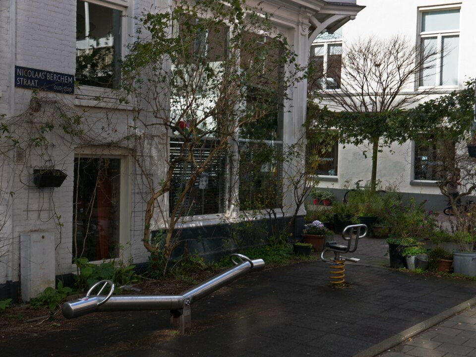
Worker-built streets, the market, coffee and small record shops.
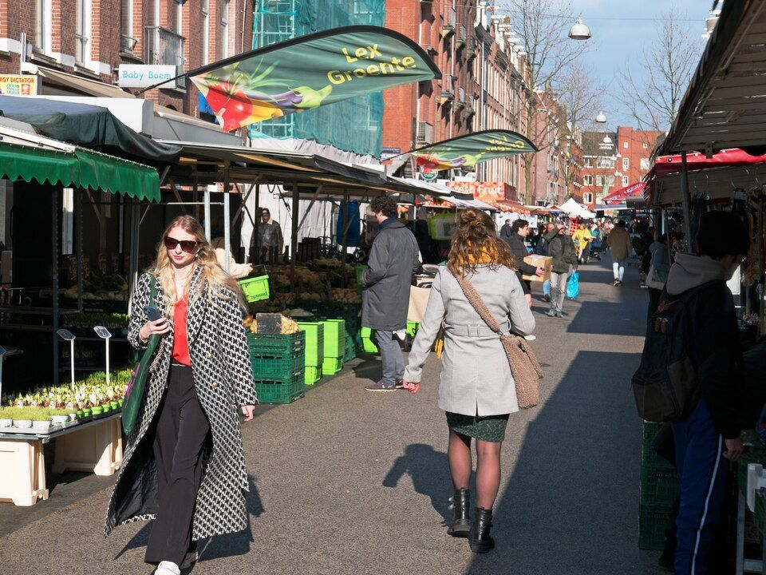
Ten Katemarkt, converted halls and independent cafés.
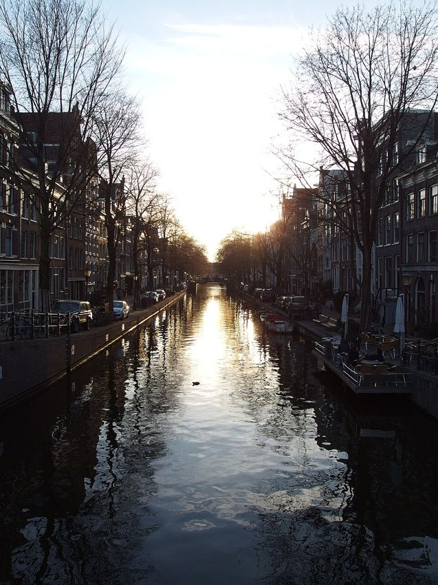
Working-class canals, galleries and second-hand records.
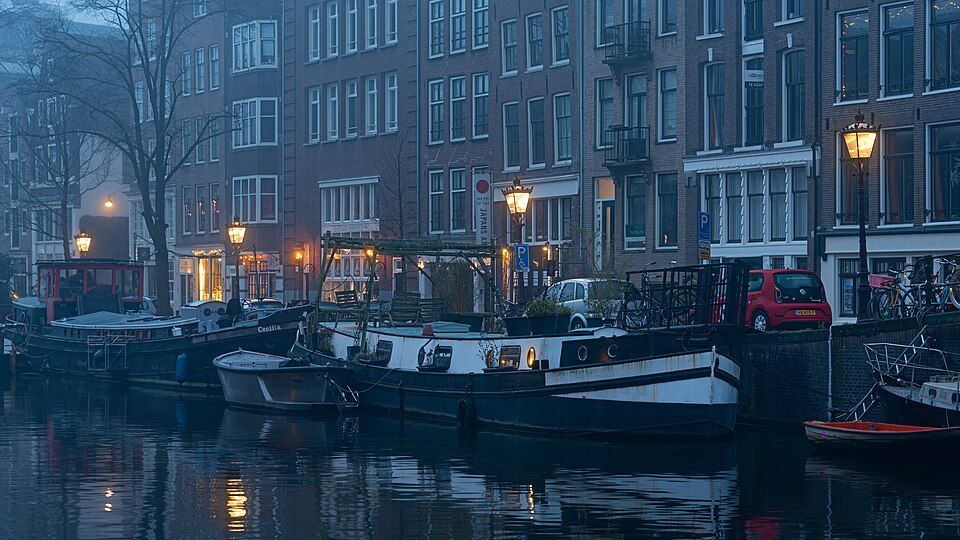
Seventeenth-century canal crossings and independent browsing.
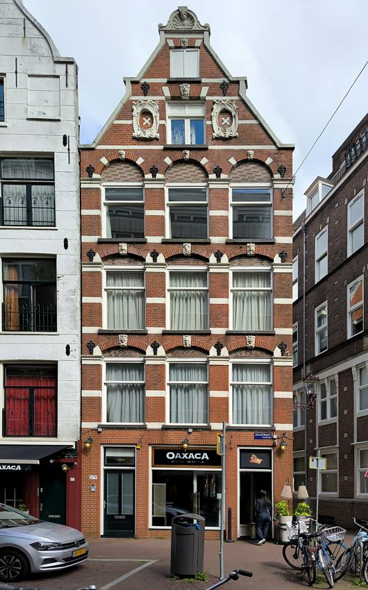
The medieval core, with better shops off the busiest strip.
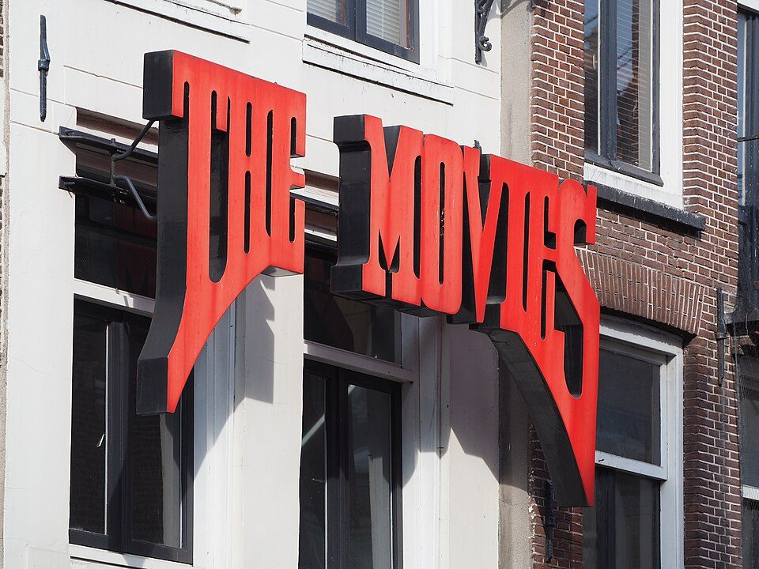
A historic westward route of cafés and independent shopfronts.
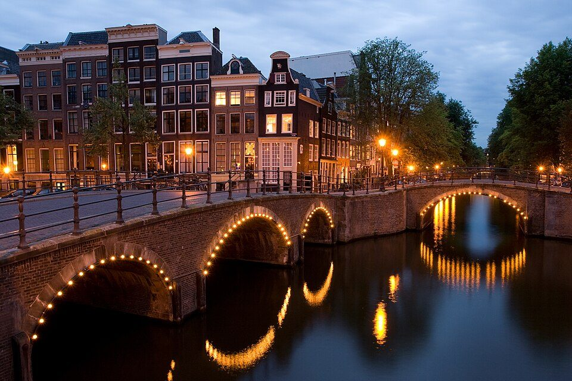
Planned canals, photography museums and deep record digging.
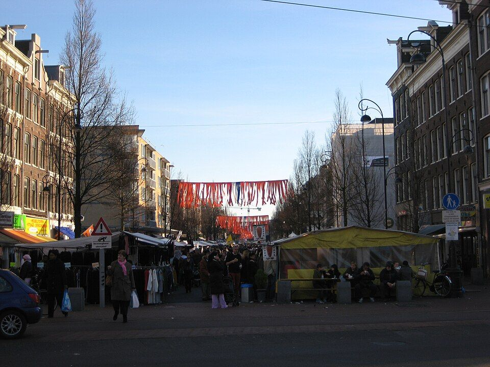
Dappermarkt, Javastraat and a slower green edge.
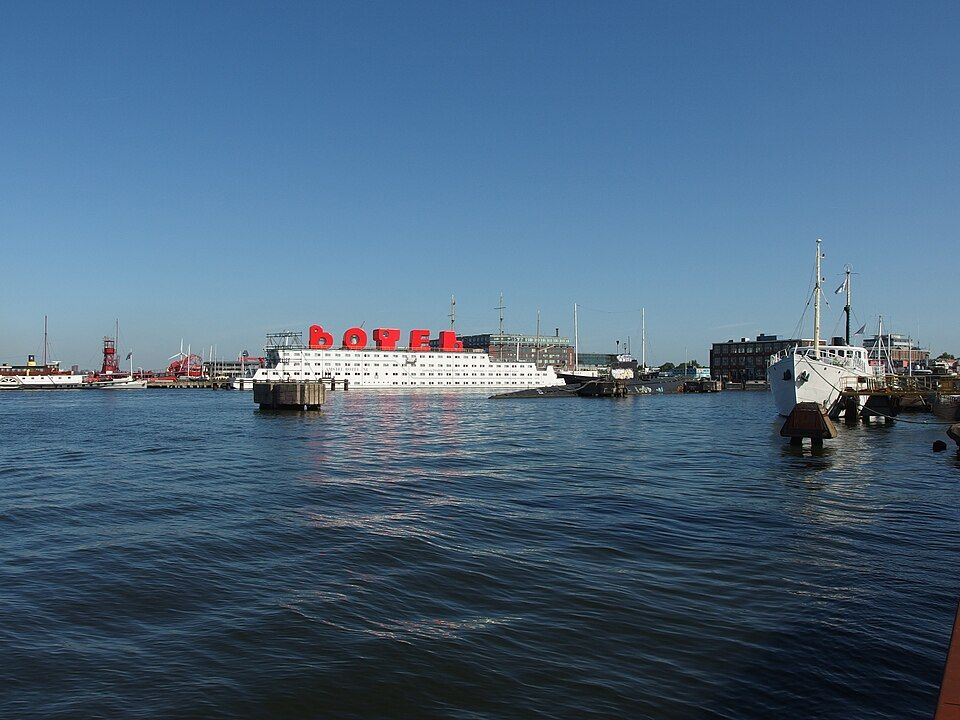
A ferry, a reclaimed shipyard and large-scale street art.
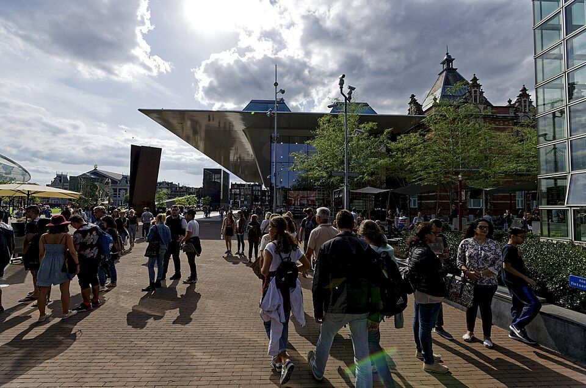
Rijks, Van Gogh and Stedelijk in one museum district.

Amsterdam School brickwork and a quieter coffee detour.

A proper morning meal: early plates, slow brunches and bakeries with something to eat.
Tea-forward stops and properly made coffee.
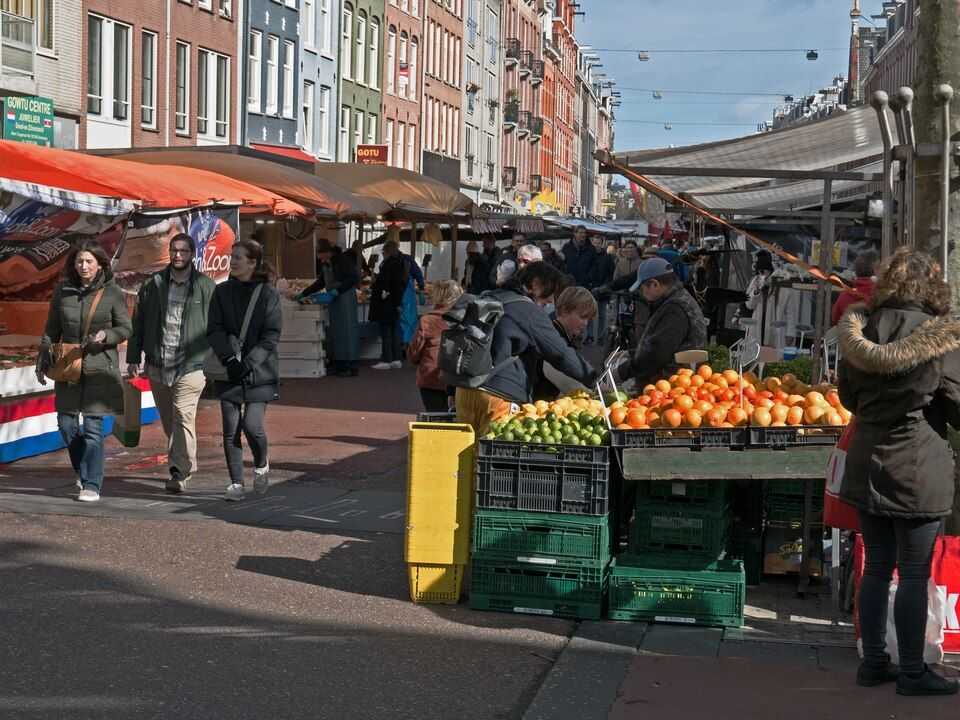
Roti rolls, onigiri, sandwiches, burgers and market bites.
Worth arranging a table—or leaving flexible.
Jazz, soul, city-pop luck and electronic records.
Independent stores, sharp labels and Dutch design.
Photography and contemporary work first; the classics remain optional.
Cocktails, wine and dates that actually overlap.
Working streets and the pleasure of an unscheduled walk.